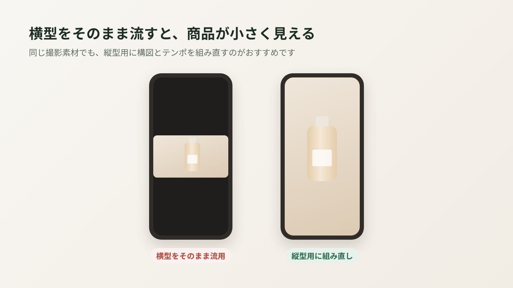
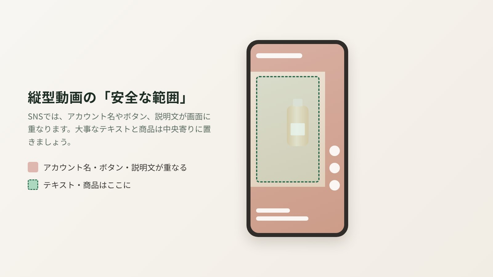

「Amazon用に作った動画、そのままInstagramやTikTokにも使えますか？」——最近とても増えているご質問です。結論から言うと、そのまま流用するのはあまりおすすめしません。同じ商品動画でも、Amazonの商品ページとSNSでは「見られ方」がまったく違うからです。この記事では、横型（Amazon・楽天用）と縦型（SNS用）の違いと、予算をムダにしない使い分け方をお話しします。
まず結論：横型と縦型は「見る人の状態」が違う
いちばん大きな違いは、動画のサイズよりも見ている人の気持ちです。
| Amazon・楽天（横型） | SNS（縦型） | |
|---|---|---|
| 見ている人 | 商品を探して、比べている人 | なんとなくスクロールしている人 |
| 動画の役割 | 購入前の不安を解消する | 手を止めて、興味を持ってもらう |
| 主な画面比率 | 16:9（横型）または1:1 | 9:16（縦型・全画面） |
| 大事なこと | 使い方・サイズ感・質感を丁寧に | 最初の一瞬で目を引く |
Amazonの商品ページに来る人は、すでにその商品に興味があります。だから、少し落ち着いたテンポで「使うとこうなる」を見せるのが効きます。一方SNSは、興味がない人の指を止めるところから始まります。同じ素材でも、編集の考え方が根本から違うんです。
Amazon用の横型動画を、そのままSNSに流すと？

横型の動画をそのまま縦型の画面に流すと、上下に大きな余白ができて、商品が画面の真ん中に小さく映ります。スマホを縦に持っている人にとっては、それだけで「広告っぽい・見づらい」と感じて、スクロールされやすくなります。
逆に、縦型の動画をAmazonや楽天の商品ページに入れると、今度は左右が余って商品が小さく見えがちです。商品ページ用は横型か正方形がおすすめ、という話は規格・仕様の記事でも詳しくまとめています。
縦型動画で気をつけたい3つのこと

- 最初の1〜2秒で「何の動画か」が分かること
SNSでは、興味を持たれなければすぐに次の動画へ流れてしまいます。商品がいちばん魅力的に見える瞬間や、「えっ」と思う変化を冒頭に持ってくるのが基本です。 - 画面の上下・右側にテキストを置かない
縦型のSNSでは、アカウント名や説明文、いいねボタンなどが画面に重なります。大事なテキストや商品は、画面の中央寄りに収めておくと安心です。 - 短く、テンポよく
商品ページ用の45秒をそのまま縦にするより、15〜30秒ほどに絞ったほうが最後まで見てもらいやすくなります。伝えるポイントも1〜2個に絞るくらいがちょうどいいです。
予算をムダにしない、いちばん効率のいい作り方
「横型も縦型も欲しいけど、2本分の予算は厳しい」——そんなときにおすすめなのが、撮影を1回で済ませて、編集で作り分ける方法です。
- 撮影の段階で、縦型にも使えるように撮っておく
あとで縦に切り抜いても商品が切れないよう、少し余裕をもった構図で撮ったり、縦型用のカットを別に押さえたりします。ここは、最初から「縦型も作る」と分かっていることが大切です。 - メインの横型（商品ページ用）を作る
使い方・サイズ感・質感をしっかり伝える、購入前の不安に答える動画です。 - 同じ素材から、短い縦型（SNS用）を編集する
冒頭のインパクトと、いちばんの推しポイントに絞って、15〜30秒ほどにまとめます。
あとから「やっぱり縦型も欲しい」となると、構図が合わずに撮り直しが必要になることもあります。SNSでも使う予定が少しでもあるなら、最初の相談で伝えておくのがいちばんの節約です。
どっちを優先すべき？迷ったときの考え方
予算的にどちらか1本、という場合は、次のように考えると決めやすいです。
- Amazon・楽天での売上を伸ばしたい → まずは横型（商品ページ用）。商品ページに来た人の「買うかどうか」を後押しします。
- まだ知られていない新商品を広めたい → 縦型（SNS用）。まずは存在を知ってもらうことが先です。
- どちらもやりたい → 撮影を1回にまとめて、横型と縦型をセットで作るのが効率的です。
モールで売っている商品なら、まずは商品ページの動画を整えてから、SNSに広げていく順番がおすすめです。せっかくSNSで興味を持ってもらっても、商品ページで不安が解消できなければ、購入にはつながりにくいからです。
よくある質問
Amazon用の横型動画を、縦型に作り直すことはできますか？
多くの場合できますが、元の構図によっては商品が切れてしまい、きれいに縦型にできないこともあります。最初から縦型も作る前提で撮影しておくと、仕上がりがぐっと良くなります。
縦型動画の長さは何秒がいいですか？
SNS用なら15〜30秒ほどがひとつの目安です。長さよりも、最初の1〜2秒で興味を持ってもらえるかどうかのほうが大切です。
縦型動画をAmazonの商品ページに載せてもいいですか？
載せること自体はできますが、商品ページでは左右に余白ができて商品が小さく見えがちです。商品ページ用は、横型（16:9）か正方形（1:1）がおすすめです。
横型と縦型をセットで頼むことはできますか？
はい。nanase worksでは、Premiumプランに縦型動画1本（目安15〜30秒）が含まれています。撮影を1回にまとめられるので、別々に頼むより効率的です。
最後に
縦型と横型は、どちらが良い・悪いではなく、役割が違います。商品ページでは「安心して買ってもらう」、SNSでは「まず知ってもらう」。同じ商品でも、見る人の状態に合わせて見せ方を変えるだけで、動画の働き方はずいぶん変わります。
「うちの商品なら、どちらから作るべき？」というご相談も歓迎です。売り場や目的をうかがったうえで、無理のない作り方をご提案します。
商品ページ用もSNS用も、まとめてご相談いただけます
nanase worksでは、Amazon・楽天の商品ページ用の横型動画に加えて、同じ撮影素材からSNS用の縦型動画もお作りしています。「どちらが必要か分からない」という段階からでも大丈夫です。